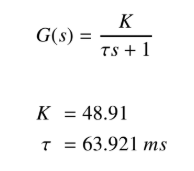

Assignment2 <<
Previous Assignment3
範例一:使馬達每轉的脈衝數透過正交增加。
負載是一小磁盤，要對它的位置進行速度控制，磁盤的直徑等於0.06 m，質量等於0.050 Kg。
L293D: 雙 H 橋直流馬達驅動 IC
dsPIC30F4011:某種晶片
voltage regulator:穩壓器

於第一實驗求得增益k，然後使用該增益來計算可用於計算恆定時間τ的穩態值。
要設計一個控制器，我們要指定其功能。
對於瞬態，我們希望負載的穩定時間小於5%或等於3τ/ 5，而過衝則小於或等於5％。
也可以直接在離散時間內進行所有設計。 在本示例的其餘部分中，我們將選擇此方法。
根據系統傳遞函數的表達式以及所需的性能，我們至少需要一個比例積分器（PI）控制器。該控制器的傳遞函數由下式給出：
其中KP和KI是要確定的數值，以迫使負載具有我們施加的性能。
使用零階保持 (Zero-order hold)和Z -transform表，我們得到：
對於控制器，使用梯形離散化，我們得到：
將分子和分母除以z並回到時間，我們得到：
結合執行器及其負載和控制器之一的傳遞函數，我們得到以下閉環傳遞函數：
現在使用期望的性能，很容易得出結論，主導極點是
其中ζ和ωn分別代表我們系統控制閉環的阻尼比和固有頻率。 根據控制理論，眾所周知，過衝d％和5％的建立時間ts由下式給出：
使用我們的表演和這些表達，我們得出以下結論：
它具有以下主要優勢：
s1,2 = −78.2216 ± 78.2452 j
使用Z等於e的ts次方並使用t=τ/10=0.0064，我們在Z域中獲得以下主導極點：
z1,2 = 0.5317 ± 0.2910 j
對於這些極點，我們具有以下特徵方程式：
現在使用極點代入，我們得到：
1 + C(z)G(z) = Δd
這意味著：
使用K，T和τ的值，我們得到增益KP和KI的以下表達式：
KP = 0.1480
KI = 10.1951
備註11.2.1在這種情況下，必須謹慎，因為我們不在乎傳遞函數零的位置，因此在實現此控制器時可能會有些意外。 顯然，我們將獲得的性能（穩定時間和超調）將取決於零的位置。有關此問題的更多詳細信息，請向讀者介紹Boukas
為了實現此PI控制算法並確保所需的性能，我們將使用Microship1的微控制器。 這種選擇是由於我們在此類微控制器方面的經驗所致。 讀者可以記住，其他製造商的其他任何微控制器都可以做些小改動。 在本示例中，我們將使用Microhip的單片機dsPIC30F4011。
我們實現的代碼使用C語言編寫。 採用這種語言是因為其簡單性。 該實現具有以下結構：
//
// Put here the include
//
#include "p30F4011.h" // proc specific header
// Define a struct
//
typedef struct {
// PI Gains
float K_P; // Propotional gain
float K_I; // Integral gain
//
// PI Constants
//
float Const1_pid; // KP + T KI/2
float Const2_pid; // -KP + T KI/2
float Reference; // speed reference
//
// System variables
//
float y_k; // y_m[k] -> measured output at time k
float u_k; // u[k] -> output at time k
float e_k; // e[k] -> error at time k
//
// System past variables
//
float u_prec; // u[k-1] -> output at time k-1
float e_prec; // e[k-1] -> error at time k-1
}PIStruct;
PIStruct thePI;
thePI.Const1= thePI.K_P+T*thePI.K_I/2;
thePI.Const2=-thePI.K_P+T*thePI.K_I/2;
thePI.Reference=600;
//
// Functions
//
float ReadSpeed(void);
float ComputeControl(void);
float SendControl(void);
//
// Interrupt program here using Timer 1 (overflow of counter Timer 1)
//
void __ISR _T1Interrupt(void) // interrupt routine code
{
// Interrupt Service Routine code goes here
float Position_error;
//
// Read speed
//
thePI.y_m=ReadSpeed();
thePI.e_k= thePI.Reference-thePI.y_m;
//
// Compute the control
//
ComputeContrl();
//
// Send control
//
SendControl();
IFS0bits.T1IF=0; // Disable the interrupt
}
int main ( void ) // start of main application code
{
// Application code goes here
int i;
// Initialize the variables Reference and ThePID.y_m (it can be read
from inputs) Reference = 0x8000; // Hexadecimal number
(0b... Binary number) ThePID = 0x8000;
// Initialize the registers
TRISC=0x9fff; // RC13 and RC14 (pins 15 and 16) are configured as outputs
IEC0bits.T1IE=1; // Enable the interrupt on Timer 1
// Indefinite loop
while (1)
{
}
return 0
}
% ReadSpeed function
int ReadSpeed (void)
{
}
% ComputeControl function
int ComputeControl (void)
{
thePI.u_k=thePI.u_prec+thePI.Const1*thePI.e_k+thePI.Const2*thePI.e_prec;
}
% SendControl function
int Send Control (void)
{
sendControl()
//
// Update past data
//
thePI.u_prec=thePI.u_k;
ThePI.e_prec=thePI.e_k;
}
從該結構可以看出，首先我們注意到系統將進入循環，並在每次中斷時調用函數：
- ReadSpeed;
- ComputeControl;
- SendControl;
並採取適當的措施。
ReadSpeed函數在每個採樣時間返回加載速度，該速度將由ComputeControl函數使用。 SendControl功能通過L293D芯片將適當的電壓發送到執行器。
使用編譯器HighTec C獲取十六進制代碼，並使用PicKit-2將文件上傳到微控制器的內存中。 有關如何獲取十六進制代碼的更多詳細信息，我們邀請讀者閱讀編譯器HighTec C或Microchip的編譯器C30的手冊。
但是這種情況是不實用的
Assignment2 <<
Previous